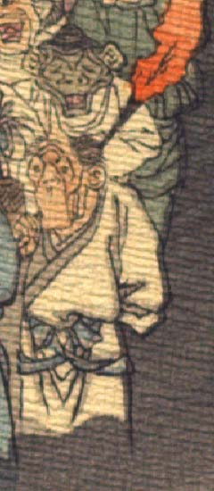

老人のような鬼。頭頂は禿げ、.長い角が1本生えている。側頭部に髪が生え、耳は大きい。額に皺が寄り、目と口が小さく、鼻は低い。あごは長く、頬の肉がたるみ、皺が寄っている。中国風の白い衣服を身に着け、右肩に火がついた松明を担いでいる。
著作者：J.Dautremer／出典：親書誌：U426_nichibunken_0123：Le vieillard et les démons／日付：2006／資源識別子：U426_nichibunken_0123_0002_0004
Copyright (c)2010- International Research Center for Japanese Studies, Kyoto, Japan. All rights reserved.